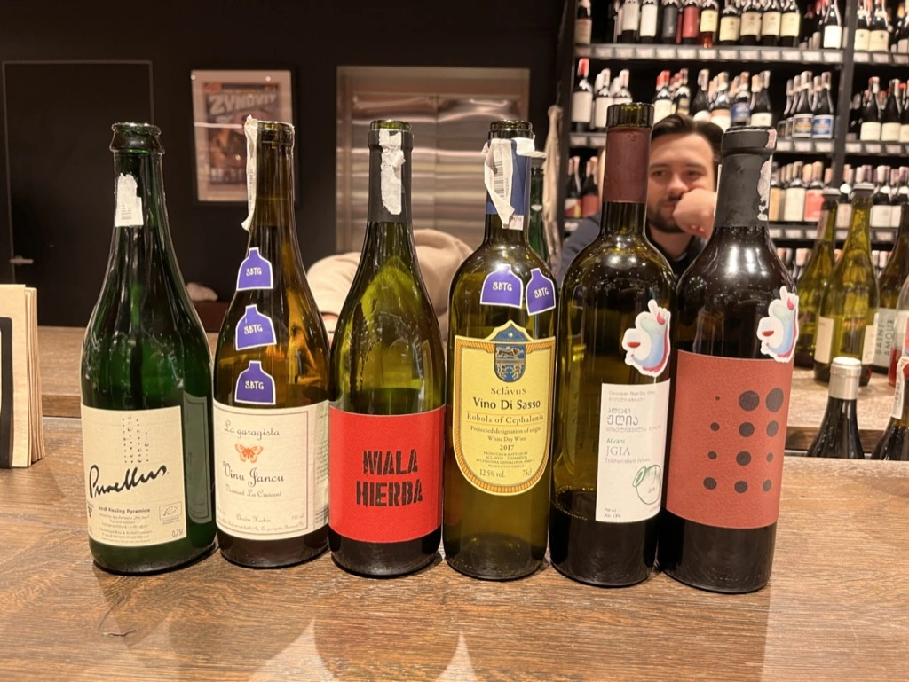
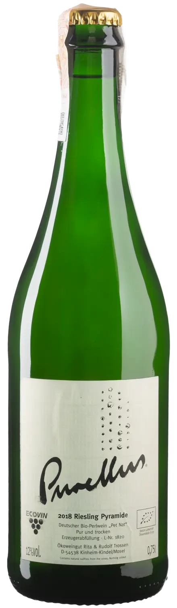
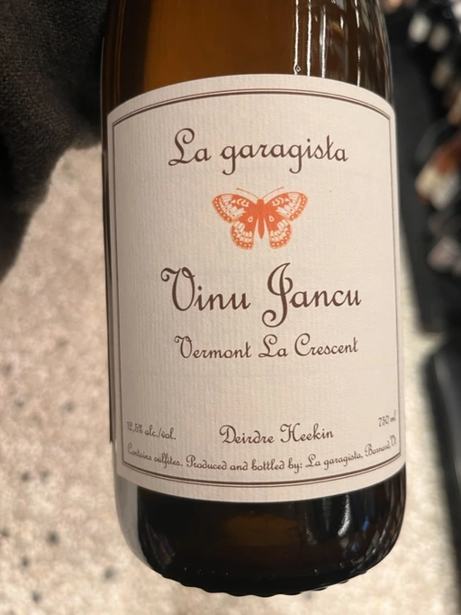
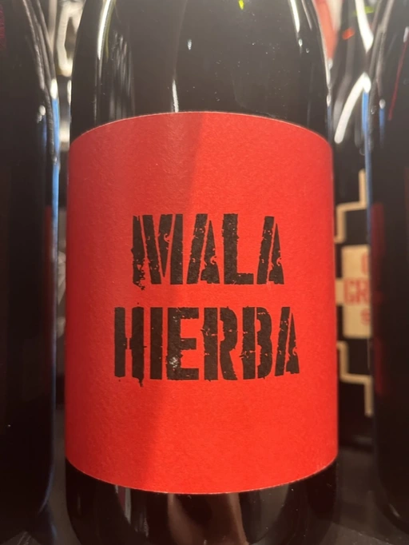
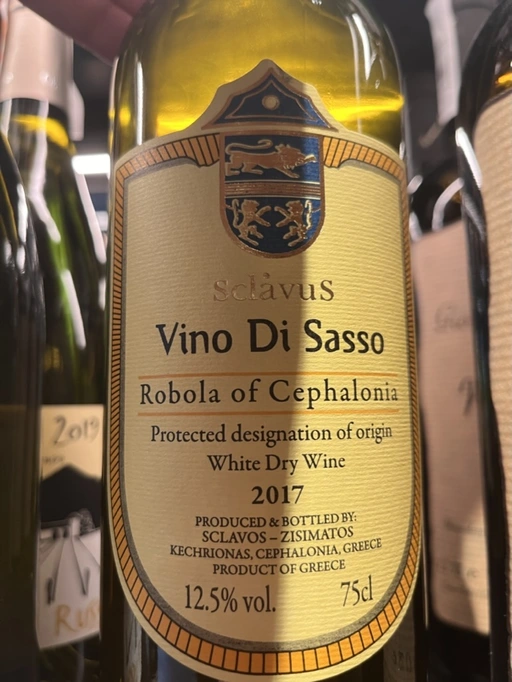
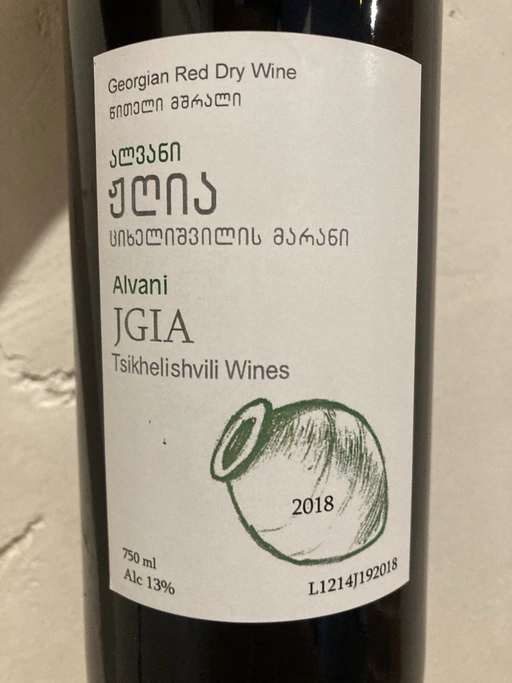
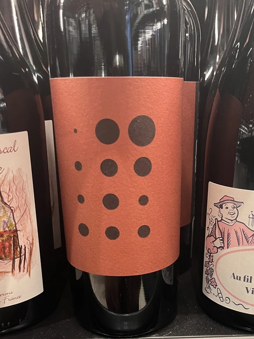

Atypical ver.1.22474487139...

Only a few decades ago, wine connoisseurs referred to wines solely by specific names (usually by the place of origin), mostly ignorant of the grapes used to make these wines. With the rise of vine studies and the appearance of new winemaking regions, we started to know wine as Pinot Noir, Chardonnay and Cabernet Sauvignon rather than Bourgogne, Chablis and Claret. And there is little wonder. Dividing the world of wine varietally rather than geographically is much easier, especially if you consider some tricky parts of the old world. Of course, terroir and winemaking techniques are critical. But the knowledge and acknowledgement of the grapes are the virtues of the modern wine world.
Some vines are like hobbits - they stay home and enjoy their status quo. Others do travel and are being planted all over the globe. Of course, there are adaptive grapes like Chardonnay or nit-picky grapes like Pinot Noir. Yet farmers and winemakers constantly experiment with various vines to find the best combination of terroir and grape. In general, it’s a good idea to stick with established pairs, as they exist for a reason. But sometimes, a mage invites you on a journey, and you can’t resist. And so we make our steps towards atypical combinations of grapes and locations.
- Rita & Rudolf Trossen Purellus Riesling Pyramide Pet Nat 2018
- La Garagista Vinu Jancu Reserve 2017
- Pol Opuesto Mala Hierba Nunca Muere 2017
- Sclavus Vino di Sasso 2017
- Tsikhelishvili Wines Jgia 2018
- Piquentum Refošk Vrh 2018
Rita & Rudolf Trossen Purellus Riesling Pyramide Pet Nat 2018

- producer: Rita & Rudolf Trossen
- name: Purellus Riesling Pyramide Pet Nat
- vintage: 2018
- grapes: Riesling
- appellation: Deutscher Wein
- location: Mosel, Germany
- alcohol: 12
- sugar: N/A
- price: 1150 UAH
Our first wine is a Riesling from Kinheim-Kindel village, Mosel. You could rightfully state that there is nothing atypical in this combination. Yet, it’s not common to find Pétillant Naturel Riesling on Ukrainian shelves.
Vines were grown in these lands for a long time. Already the Celts and Romans admired the terroir producing delicate and fresh wines with lower levels of alcohol. Rita & Rudolf Trossen hopped on this train in 1978. With the help of biodynamic principles, they intend to produce wines that speak the language of this Middle-Mosel region.
All wines are spontaneously fermented and unfiltered with no added sulphites. Labels (as well as the happy person on the ‘cork’) are created by Werner Krumsiek, artist and gastronomer from Düsseldorf.
Alternatively, I wanted to include Marco de Bartoli Terzavia - a Grillo-based traditional sparkling from Sicily. But most participants have already tasted it, so I decided to bring something new.
La Garagista Vinu Jancu Reserve 2017

- producer: La Garagista
- name: Vinu Jancu Reserve
- vintage: 2017
- grapes: La Crescent
- region: Vermont
- location: USA
- alcohol: 12.5
- sugar: N/A
- price: 1750 UAH
The history of winemaking in the North America is a tale of the shattered hopes of would-be wine-growers. When the early colonists first landed in North America, they were impressed by the lush vines whose fruit decorated the forests. Yet the wines made of these grapes were ‘foxy’ - the earthy muskiness was prevalent in the smell and flavour. Europeans didn’t enjoy the result, so they decided to bring vines from their homelands. Yet they struggled and failed to grow European vines. The plants withered and died. Having no notion of what was killing their vines, the colonists assumed it was their fault and kept trying different varieties and methods.
Today we know that diseases and climate caused these troubles. Phylloxera, the deadliest enemy of European vines, riddled American soil. The hot, humid summers of the south and east encouraged diseases unknown in Europe. And in the north, imported vines died because of harsh winters. Yet native American vines developed resistance to all of these hazards.
Success came with accidental hybrids of Vitis vinifera (Europe’s only vine species) and local Vitis labrusca. New vines were resistant, and the wines produced were less faulty. With this discovery, a new era in American winemaking started. But that’s the story for another time.
La Garagista (one who makes wine in a garage) is located on Mount Hunger at the edge of the forest in the Châteauguay and in the Piedmont chain of hills in Barnard, Vermont, USA. It’s a small homestead farming focused on vines, but they also grow vegetables, fruits, flowers, and herbs for personal consumption. Deirdre Heekin and Caleb Barber started the farm in 1999, yet the winery opened its doors in 2010 with the first vintage. They currently make around 34 distinct cuveés, including several ciders.
We have a wine made of La Crescent, a white grape varietal developed by the University of Minnesota’s cold-hardy grape breeding. Vinu Jancu is an old Sicilian name for white wines made in a red wine manner, e.g. orange wines. Deirdre Heekin was making this wine since the beginning of La Garagista and considers it to be their flagship wine. Grapes come from the West Addison vineyard, they grow on clay and limestone. Fermented on indigenous yeasts, it remained sur lie for winter in glass demijohns.
Pol Opuesto Mala Hierba Nunca Muere 2017

- producer: Pol Opuesto
- name: Mala Hierba Nunca Muere
- vintage: 2017
- grapes: Corbeau
- region: Mendoza
- location: Argentina
- alcohol: 12
- sugar: 1
- price: 980 UAH
It’s funny how the second most widely planted red grape in Argentina is so underdeveloped and overlooked. When we talk about red Mendoza, we usually mean full-bodied wines made of Malbec, Merlot and Cabernet Sauvignon. But up in the Andes they also grow Tannat, Criolla Chica, Criolla Grande, and Bonarda. Despite the name, our protagonist is unrelated to Italian Bonarda. This is just a historical mistake. A confusion. According to VIVC, the primary name of this grape is Corbeau, but it is more known as Douce Noire, originating from Savoie, France.
On a side note, Bonarda is so overloaded that you better avoid using this name to avoid confusion. It may refer to Bonarda Piemontese, Bonarda wine from Oltrepò Pavese in Lombardy or Bonarda wine from Piedmont made of Uva Rara. Now there is Argentinian Bonarda. Go figure.
In general, Douce Noire is less tannic than Malbec, and displays higher acidity, making it juicier. Most Argentinian Bonarda is made with little to no oak, so if you dislike the heavy oak influence, this grape is something to look for.
“If I were told I could only make wine in Argentina from one variety, I would choose Bonarda” - says Pol Andsnes. After moving to Argentina and starting his winery, it took him full 5 years to discover the exact vineyard that would express (for him) the real potential of Bonarda. Mala Hierba means bad weed (бур’ян), this is what grows together with his 45-years old vines. Mala Hierba Nunca Muere. Literally, it means that weed never dies. But you can use it to say that only good ones die young. Oh, these rebels! It’s a kind of homage to people of a rare breed that appreciate Bonarda.
Whole bunches of grapes are crushed and trodden with 19 days of maceration. While the fermentation was still ongoing, Pol pressed it in a manual basket press and moved it to old 225-litre French oak barrels to finish fermentation. It is aged for additional 11 months before bottling, of course, unfined and unfiltered with only a tiny bit of sulphites added.
Sclavus Vino di Sasso 2017

- producer: Sclavus
- name: Vino di Sasso
- vintage: 2017
- grapes: Robola
- appellation: PDO Robola of Cephalonia
- location: Ionian Islands, Greece
- alcohol: 13
- sugar: 1
- price: 920 UAH
Hold on tight as the road takes us to the Ionian Islands! Wait, road? Where we’re going, we don’t need roads. Too soon? Alright, let’s focus on the wine at hand. So Greece, huh? A land of hundreds of intriguing indigenous grape varieties? Yes, it sounds like I am being lazy again. But let’s be honest, we mostly know this region by Xinomavro, Agiorgitiko, Roditis, Malagousia, and Assyrtiko. Ah, and of course, Muscat de Samos, thanks to Sous Le Végétal. But what about Vidiano, Liatiko, Thrapsathiri and Robola? Someone, please stop me.
Sklavou family, originally from Ntomata of Livathou, is a family of naval shipowners. In 1700 a branch of this family migrated to Odesa (remember the spelling). Around 1860 Evryviadis (great-grandfather of the current generation) run a Vinaria. Yet the revolution forced him to move to Kefalonia in 1919. This is where he planted his first vines on a privately owned estate. And this turned into a company owned by Sklavou and Zisimatos S. families. 70 years old vines on average, biodynamic farming, and modern winemaking techniques.
Alright, this is something you can easily find on their official site. What I don’t fully understand is the meaning of their family name. Aye, “Sclavus” (from late Latin) and “Sclavos” (Σκλάβος) both have the same meaning of Slav or slave (the connection has a reason, of course). But why were they given this name? I could not find any explanation, so it left me wondering. By the way, transliteration of Greek names is another confusing topic, but it’s funny to see how inconsistent it is even on a single label.
In any case, Vino di Sasso (e.g. Wine of the Stone) is a 100% Robola from 30 years old vines growing on limestone slopes of Mount Ainos at 650-700 metres above sea level (I could just say altitude, but more letters mean a more good-looking article). Despite the similarities in the name, Robola has nothing to do with Ribolla or Rebula we all know and love. Grapes are pressed under inert conditions (turns out, Robola is prone to oxidation), fermented in tanks with indigenous yeasts, and bottled unfiltered with little added sulphites.
Tsikhelishvili Wines Jgia 2018

- producer: Tsikhelishvili Wines
- name: Jgia
- vintage: 2018
- grapes: Jgia
- region: Kakhetia
- location: Georgia
- alcohol: 13
- sugar: 2.79
- price: 818 UAH
Aleqsi Tsikhelishvili is an icon in the Georgian natural wine world. He learned winemaking techniques at an early age from his mother. The family owns 3 ha old vineyards in the village of Zemo Alvani in Kakheti. Aleqsi cultivates Rkatsiteli, Mtsvane and Jgia. The latter grape is on the brink of extinction, and Aleqsi owns 100 vines!
Jgia is indigenous to the Kakheti region. It is on the brink of extinction (thanks to the Soviets, of course), yet Aleqsi owns 100 vines, one of the biggest plantings in the region. Jgia is relatively light in colour and tannin. If you are used to powerful Georgian reds that act as sandpaper for your mouth, there is a lot to discover.
Literally hand-made and in low amounts (3000-5000 bottles per year), these wines are exported to the USA, Japan, Germany and Ukraine. While the exterior and the story might look simple, this is the case when you need to taste the wine to see its true nature of beauty and craft.
Piquentum Refošk Vrh 2018

- producer: Piquentum
- name: Refošk Vrh
- vintage: 2018
- grapes: Refošk
- region: Istra
- location: Croatia
- alcohol: 14.5
- sugar: 2
- price: 1400 UAH
Some grapes are characters from Santa Barbara. Teran is a distinctive Istrian red wine grape, sometimes called Refošk. And despite similarities, it has nothing in common with Refosco dal Peduncolo Rosso from Friuli. At least, according to Jancis Robinson. Other sources do confuse these grapes. And while I trust Jancis Robinson, it’s interesting that Piquentum calls Refošk a younger relative of Teran and produces two distinct red wines from “these two grapes”. And while Slovenians “object” to Croatian use of the name “Teran”, it originates from Italy, at least according to VIVC. Soap opera, indeed.
Grapes are hand-picked and slowly pressed into a tank without temperature control. But since the temperature in the winery is a constant 10-11ºC all year long, they have to use fans to draw warmer air from outside for fermentation to start with indigenous yeasts. Refošk macerates for 2-4 weeks and then ages in barriques for 14-18 months.
Scores
- Rita & Rudolf Trossen Purellus Riesling Pyramide Pet Nat 2018
- La Garagista Vinu Jancu Reserve 2017
- Pol Opuesto Mala Hierba Nunca Muere 2017
- Sclavus Vino di Sasso 2017
- Tsikhelishvili Wines Jgia 2018
- Piquentum Refošk Vrh 2018
| Wine #1 | Wine #2 | Wine #3 | Wine #4 | Wine #5 | Wine #6 | |
|---|---|---|---|---|---|---|
| Daria B | 3.50 | 3.70 | 3.70 | 3.70 | 3.60 | 3.70 |
| Andrii S | 4.00 | 4.00 | 3.50 | 3.80 | 3.30 | 3.80 |
| Viktoriya Zh | 4.30 | 4.00 | 3.60 | 3.70 | 3.50 | 3.90 |
| Anna Ya | 3.20 | 4.20 | 3.80 | 3.40 | 3.30 | 4.30 |
| Rostyslav Ya | 3.20 | 4.20 | 3.80 | 3.40 | 3.30 | 4.30 |
| Elvira K | 4.00 | 4.00 | 4.00 | 3.50 | 3.50 | 3.90 |
| Boris B | 3.80 | 4.00 | 4.00 | 3.80 | 4.20 | 4.00 |
| amean | rms | sdev | favourite | price | QPR | |
|---|---|---|---|---|---|---|
| Wine #1 | 3.71 | 3.74 | 0.1555 | 0.00 | 1150.00 | 1.3697 |
| Wine #2 | 4.01 | 4.02 | 0.0241 | 3.00 | 1750.00 | 1.4013 |
| Wine #3 | 3.77 | 3.78 | 0.0306 | 0.00 | 980.00 | 1.7459 |
| Wine #4 | 3.61 | 3.62 | 0.0269 | 2.00 | 920.00 | 1.4842 |
| Wine #5 | 3.53 | 3.54 | 0.0878 | 1.00 | 818.00 | 1.4797 |
| Wine #6 | 3.99 | 3.99 | 0.0469 | 1.00 | 1400.00 | 1.6778 |
How to read this table:
ameanis arithmetic mean (and not ‘amen’), calculated as sum of all scores divided by count of scores for particular wine. It is more useful thantotal, because on some events some wines are not tasted by all participants.sdevis standard deviation. The bigger this value the more controversial the wine is, meaning that people have different opinions on this one.favouriteis amount of people who marked this wine as favourite of the event.outcastis amount of people who marked this wine as outcast of the event.priceis wine price in UAH.QPRis quality price ratio, calculated in as100 * factorial(rms)/price. The reason behind this totally unprofessional formula is simple. At some point you have to pay more and more to get a little fraction of satisfaction. Factorial used in this formula rewards scores close to the upper bound 120 times more than scores close to the lower bound.
Resources
- In the beginning was the grape | JancisRobinson.com
- The founder vine varieties | JancisRobinson.com
- Weingut Rita & Rudolf Trossen
- Robinson, Jancis, and Hugh Johnson. The World Atlas of Wine 8th Edition. Illustrated, Mitchell Beazley, 2019.
- La garagista
- Bonarda is Argentina’s Next Red Wine Discovery | Wine Folly
- Vitis International Variety Catalogue
- Vouillamoz, Jancis Robinson Julia Harding Joseacute; Wine Grapes a Complete Guide to 1,368 Vine Varieties, Including Their Origins and Flavours /Anglais. International Edition, Allen Lane, 2022.
- Sclavos Wines | Οινοποιείο Κεφαλονιά
- Grape Varieties - Wines Georgia
- Istrian Wines - Malvasia, Teran, Refošk - Piquentum
- Teran | JancisRobinson.com